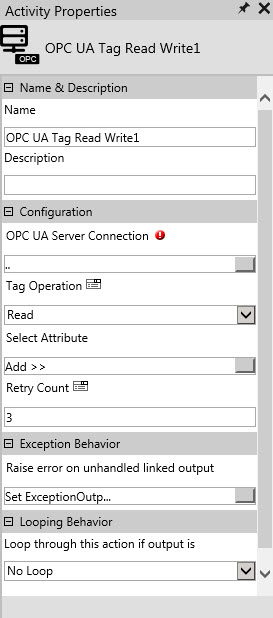

No
Use the OPC UA Tag Read Write activity to read or write the tag values from and to the OPC UA server which is connected to the AVEVA Work Tasks Server.
Activity Properties:
Specify appropriate values for the activity properties to configure the OPC UA Tag Read Write activity.
Right-click the activity, and click Properties to open the Activity Properties window. Alternatively, select the activity, and then click Activity Properties in the tool bar of the Process Designer window.
The following image shows the activity properties of the OPC UA Tag Read Write activity:

Name & Description
Use these properties to specify the name and description for the activity.
Property Type: Mandatory
Property Type: Optional. Set this property only if required.
Configuration
Use these properties to configure the functionality of the activity.
Property Type: Mandatory. This property must be set for the workflow to communicate with OPC UA Server.
For more information, see OPC UA Server Connection.
Property Type: Mandatory. This property must be set for the workflow to communicate with OPC UA Server.
Property Type: Mandatory. This property must be set for the workflow to communicate with OPC UA Server.
Property Type: Optional. Set this property only if required.
Exception Behavior
Property Type: Optional. Set this property only if required.
See Mapped Error Output for more details.
Looping Behavior
Property Type: Optional. Set this property only if required.